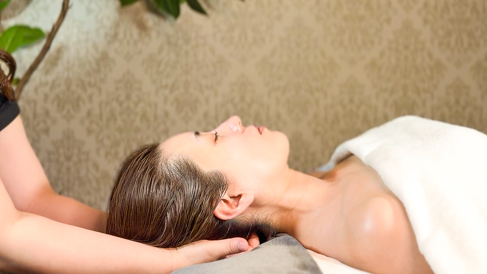
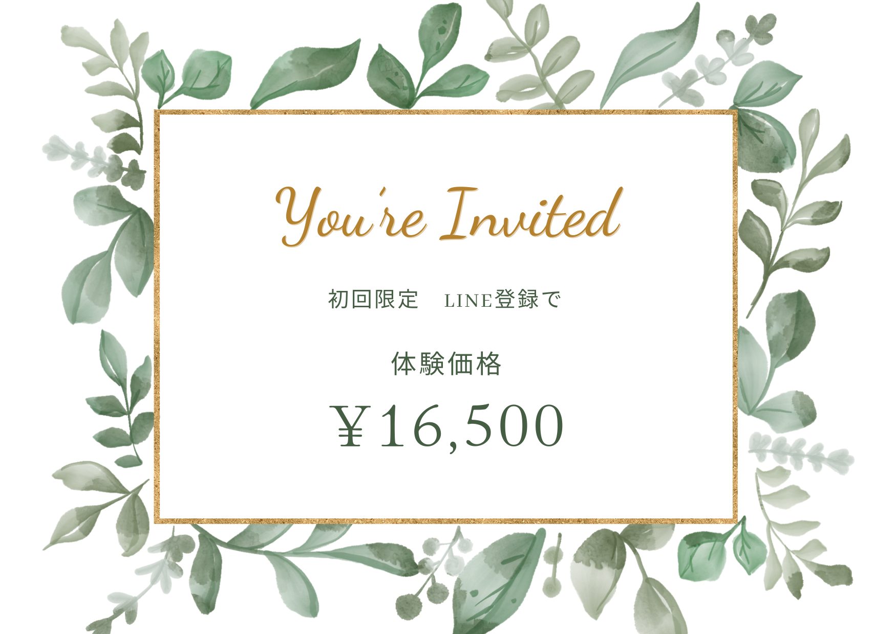
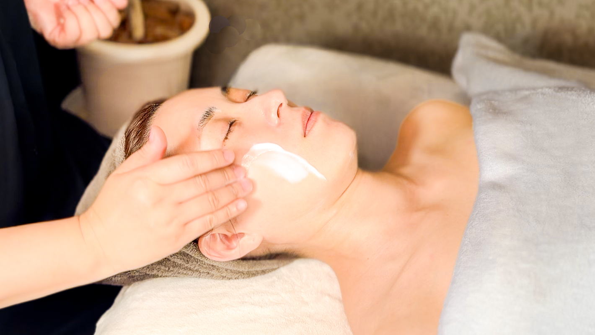
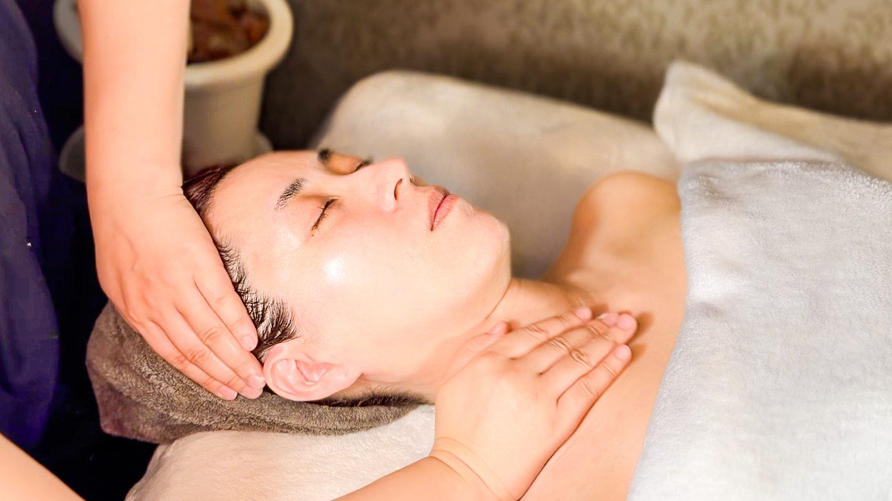
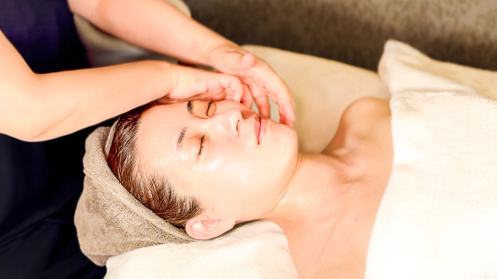
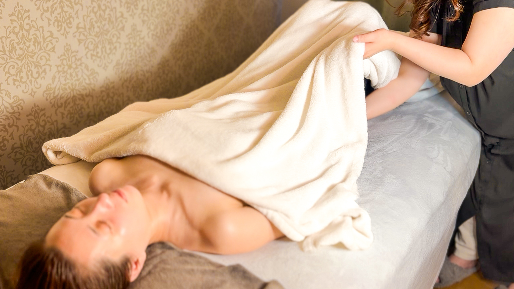
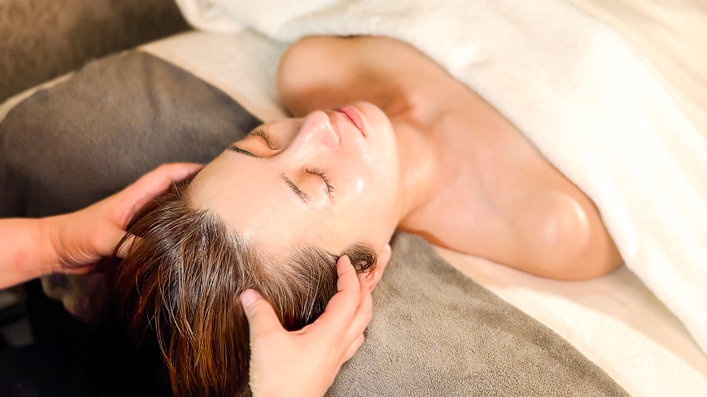
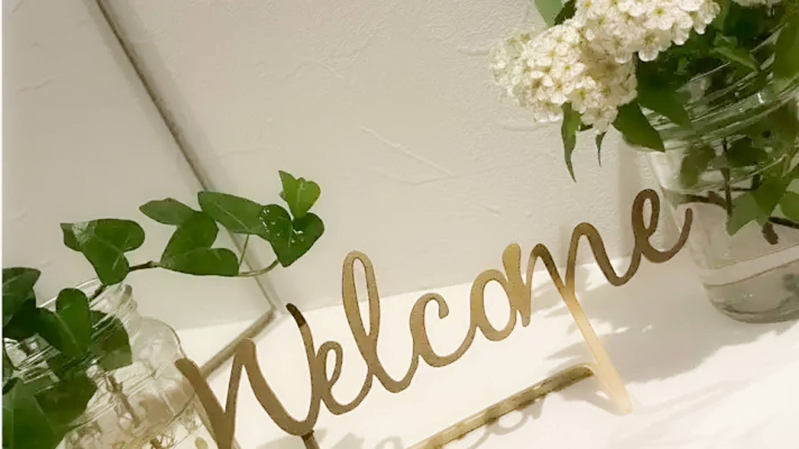

01.
肌だけでなく、心と身体にも
寄り添う施術
表面的なケアではなく、
緊張や疲れの奥にやさしくアプローチします。
たるみ・むくみ・疲れ顔に...
肌・心・自律神経に寄り添う、
札幌のフェイシャルレメディ®︎認定サロン
北海道初上陸。
オールハンドで"素直なわたし"に還る時間を。
ご相談だけでもOK / 無理な勧誘なし / ご予約はLINEで1分
La vie belle.mfは、
肌だけでなく、心と身体の状態にも寄り添う
フェイシャルレメディ®︎認定サロンです。
東洋医学・心理学・脳科学の知恵をもとに、
オールハンドの繊細な手技で、緊張や強張りを
やさしく解いていきます。
ただお顔を整えるだけではなく、
"わたしらしさ"に還る時間を届けたい。
10年後の自分を今より好きになってほしい。
そんな想いから生まれたサロンです。

01.
表面的なケアではなく、
緊張や疲れの奥にやさしくアプローチします。
02.
機械を使わず、手のぬくもりで
表情筋や巡りを整えます。
03.
ここでしか体験できない特別な時間をお届けします。
ご予約・ご相談はLINEからお気軽にどうぞ。
La vie belle.mfを
初めてご利用の方へ
特別体験価格
をご用意しています。
通常23,000円 → 初回16,500円

What is Bishin-Kangan?
"美心"とは、肌や体だけでなく、免疫やホルモン、心のしなやかさ、そして自分の本当の想いが揃った状態のこと。
"還顔"とは、誰にも左右されず、偽りのない表情、自然な輝き、凛とした佇まいが顔からあらわれることを指します。
La vie belle.mf では、
機械を使わないオールハンドのフェイシャルレメディ®で、お顔と心と体の声をそっと読み取り、やりたいのにできなかった気持ちや、押し込めてきた想いをやさしくほどいていきます。

CLEANSING
"Release & Reset"
機械もブラシも使わない、オールハンドの極上クレンジング。美容液で洗う贅沢は、肌だけでなく心までほぐしてくれる。はじまりから深呼吸したくなる、至福の時間。

LYMPHATIC DRAINAGE
"Flow Freely"
老廃物をやさしく流し、滞りを整えてむくみもすっきり。頬や目元がふわっと引きあがり、気持ちまで軽やかに解放される。

MUSCLE THERAPY
"Lift & Let Go"
表情筋をほぐしながら引き上げ、こわばりや感情のしこりをゆるめる。終わったあとは、心の奥までゆるんで、鏡に映る自分が少しやさしく笑っている。

SACRAL THERAPY
"Flow from the Source"
仙骨にそっと手を添え、体の奥から新しい流れが生まれ、全身をやさしくめぐっていく。全身のバランスが整い、ぽかぽかと温かさが広がる。深い静けさの中で、心と体がひとつに戻る感覚。

SKULL THERAPY
"Clear the Mind"
頭蓋骨の歪みを緩め、循環が整った脳脊髄液が全身に満ちて頭の奥までクリアに。お顔の土台が整い、左右差のない立体的な小顔へ。そして、目を開けた瞬間──
一度の施術は、まるで自分リトリート。ふっと息が深くなり、思考も心もほどけていく感覚を体験できます。
通ううちに、自然と呼吸が深まる自分へ。気づけば、ストレスに振り回されずに過ごせる毎日が訪れ、やりたいことを軽やかに選べる未来へ。
La vie belle.mf は、単なるエステではなく、自分の人生を取り戻すための場所。"素直なわたし"に還る時間を、ぜひ一度体験してみてください。
Mutumi
美容部員として10年以上、多くの女性と向き合い、「きれいになりたい」という想いの奥に、疲れや迷い、がんばりすぎてしまう心があることに気づきました…
肌のことだけではなく、言葉にならない疲れや緊張まで感じ取れるような施術を大切にしています。
昔の私は、なんとなくの不調や気持ちの重さが続いて、肌も心も「本当の調子」がわからなくなる日がありました。
そんな時に出会ったのがフェイシャルレメディ®︎。お顔を整えるのに、心のクセや呼吸の浅さ、体の内側の疲れまで読み取ってくれる。顔に触れられてるだけなのに"気持ちがふっと軽くなる"そんな不思議で優しい施術に心から惹かれ、この道を選びました。
La vie belle.mf は、日々がんばっている女性たちが肌も心も素直なわたしに還れる場所として生まれました。
美心還顔セラピー 体験後
施術後、顔がすっきりして目が開きやすくなりました。 終わった後は気持ちまで軽くなって驚きました。
美心還顔セラピー 体験後
ただのエステではなく、心まで整う感じがしました。 定期的に通いたいと思えるサロンです。
還顔セラピー 体験後
施術の間ずっとリラックスできて、終わった後は顔がひとまわり小さく見えました。また来たいです。
クレンジングから行いますので、メイクされたままご来店いただいてかまいません。
施術の効果をより高めるために、身体を締め付けるものはすべて外していただき、ガウンに着替えていただきます。
厳選した成分を使用していますが、アレルギーなどありましたら事前にお知らせください。
美心還顔セラピーはオールハンドのフェイシャルレメディ®トリートメントです。その日のあなたにぴったりの内容をオーダーメイドで組み立てます。
トリートメント後、アフタードリンクをご用意しています。初回は施術時間＋45分程度、2回目以降は施術時間＋30分程度を目安にしてください。
メイク用品のご用意はありません。必要な方はご持参ください。額や耳までトリートメントするため、多少生え際に成分が残る場合があります。
お支払いは現金・クレジットカード・コード決済がご利用いただけます。ご予約をキャンセルされる場合は、3日前までにご連絡ください。
前日：施術料金の50％／当日：100％を頂戴いたします。

La vie belle.mf（ラヴィベル）
Tel：090-6217-2432
〒004-0882 札幌市清田区平岡公園東6丁目
新札幌駅よりバスで9分
🚗 新札幌駅から送迎あり（要予約）
営業時間
月〜土・日・祝 10:00〜19:00
定休日
火曜日・水曜日